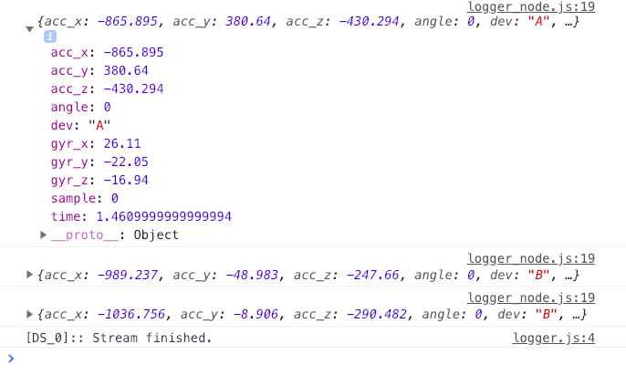
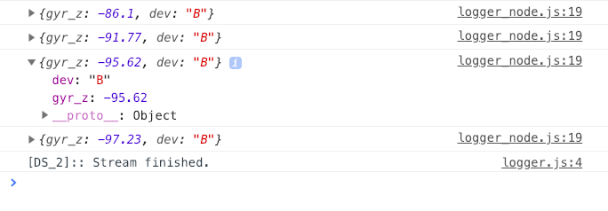
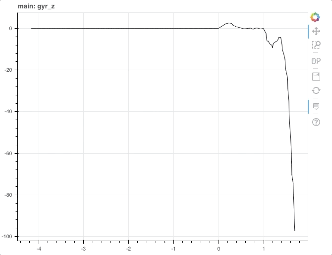

Welcome to nFLOW’s documentation!¶

Introduction¶
What is nFLOW?¶
nFLOW (Node Flow) is a javascript library that was built for protyping and implementing real time detection and feedback systems. Data is piped in realtime via websockets into a configurable state machine, which allows visualization of both raw and derived data features. Both raw data and derived features trigger state transitions through arbitrarily defined “detectors” and “applicators”, which allows for the implementation of various feedback and detection systems.
Software Architecture¶
Broadly, nFLOW consists of the following submodules:
base_node (base class for defining inheritable attributes of nflow "nodes")
logger_node (logs the output that is piped to it - often used for debugging and inspection)
transformer (applies a transformer function to a data stream)
web_socket (establishes and manages connection to socket data streams)
data_storage (implements data persistence, replay, and download)
simulator (generates signals and can be used for testing and development)
state_machine (prototypes and implments realtime detection or feedback systems)
ui (defines classes for realtime signal graphing)
event_detector (detects and outputs "events" from arbitrary input signals)
Use the navigation bar to the left to learn more about each of these components, or proceed to Getting started.
Modules¶
In the spirit of modular software, and since nFLOW consists of a network of nodes piping and analyzing signals in realtime, the base_node class was created to collect shared node attributes into an inheritable structure. It is described below. Most of the classes described below inherit from base_node, though some may override certain methods.
Base Node¶
Defined in base_node.js. The base class from which all node instances inherit.
-
class
base_node(opts)¶ Base class for defining wrtsm nodes
-
base_node.connect(sink, opts)¶ Connect node to another node
Arguments: - sink (base_node) – Node to connect to
- opts (obj) – Contains {output_port = “main_output”,input_port = “main_input”}
-
base_node.process_packet(packet)¶ Generic packet processor
Arguments: - packet (Dict) – contains { input_port , payload }
-
Web Socket¶
Inherits from base_node. Defined in web_socket.js and consists of a javascript class which handles accessing an incoming raw data stream.
-
class
web_socket(url)¶ Manages the websocket connection to an incoming data stream.
Arguments: - url (String) – The websocket url to connect to, e.g. ws://localhost:1234
-
web_socket.connect()¶ Connect to remote websocket server. Upon success, registers the websocket connection as “client” with the server, enables streaming, and this.logs to console.
-
web_socket.send_json(obj)¶ Sends JSON data through socket.
Arguments: - obj (Object) – Data object to send
Data Storage¶
Inherits from base_node. Defined in data_storage.js.
-
class
data_storage(name)¶ Manages data persistence and replay/simulation. Uses browser based local storage.
Arguments: - name (String) – Session identifier, use null for default time string
-
data_storage.flush_data()¶ Persists a chunk of data to localStorage. Uses session name + part_number as identifier
-
data_storage.load_json()¶ Loads json data into local storage
-
data_storage.load_session()¶ Loads a data storage session from localStorage. Returns Array.
-
data_storage.start_saving(rate)¶ Start saving data to localStorage. Data is saved in chunks called ‘parts’.
Arguments: - rate (Number) – The rate to flush data to localStorage in SECONDS
-
data_storage.start_stream(speed)¶ Start streaming the session that was previously loaded from localStorage
-
data_storage.start_stream_loop()¶ Helper function for start_stream()
-
data_storage.stop_saving()¶ Stop saving data to localStorage
-
data_storage.stop_stream()¶ Stop streaming the session that was previously loaded from localStorage
-
data_storage.stream_single()¶ Stream single packet
-
data_storage.to_csv(name)¶ Makes csv string from this.loaded_session
-
data_storage.to_json(name)¶ Makes and downloads json string from this.loaded_session
-
data_storage.zero_time_axis()¶ Zero the time axis of the data session
Transformer¶
Inherits from base_node. Defined in transformer.js.
Event Detector¶
Inherits from base_node. Defined in event_detector.js.
-
class
event_detector(opts)¶ Detects and emits deviation “events” from streams of arbitraty data objects
Arguments: - opts (Object) – configuration options
-
event_detector.check_baseline(detected)¶ Statefully checks if detector is at baseline
Arguments: - detected (Boolean) – result of this.detect()
-
event_detector.flush_event()¶ Flush current event to the event buffer
-
event_detector.init_event()¶ Initiate event
-
event_detector.init_history_buffer()¶ init history buffer
-
event_detector.process_data(Data)¶ Process a received data object
Arguments: - Data (obj) – object to receive
Logger¶
Inherits from base_node. Defined in logger_node.js.
-
class
logger_node()¶ Logs whatever it receives
Simulator¶
Inherits from base_node. Defined in simulator.js.
State Machine¶
Inherits from base_node. Defined in state_machine.js. This class encapsulates functionality for configuration and implementation of a state machine detection system.
Broadly, the architecture consists of a buffer which holds the last buffer_size streaming values received. Each time a new data packet is received it is appended to the buffer and the oldest value is dropped.
Below are definitions of key components of the architecture:
| Component | Description |
|---|---|
| Sensor | A function which takes a state_machine and returns a scalar (plottable) value OR false |
| Detector | A function which takes a state_machine and returns a boolean. |
| Applicator | A function which takes a state_machine and modifies its state in a particular way |
| Transitioner | A dictionary that consists of a paired detector and applicator |
Sensors¶
Sensors enable three important features:
- Computation of derived data values in realtime
- Use of said values to easily create Detectors by combining a Sensor and a comparison operation
- Declarative style specification of graphing derived values in realtime (i.e specify which Sensors should be graphed)
For example, a Sensor which calculates the diff of an incoming voltage signal would look like the following:
function diff(state_machine) {
var buffer = state_machine.buffer
var len = buffer.length
//in general, the buffer consists of data objects, which have fields of interest
//for example, if we are interested in the voltage measurement for each data packet...
var voltages = buffer.map( e => e['voltage'] )
return voltages[len-1] - voltages[len-2] //returns the diff of the last two values
}
Server Implementation¶
The Web Socket class establishes a connection with a remote websocket server and must communicate with it using a predefined protocol, described here. It does so by sending data packets, each of which is a javascript object containing fields type and data, for example:
{type: "control", data : "stop"}
Below is a table describing the appropriate server responses to various messages from the Web Socket class.
| Msg Type | Data | Server Response |
|---|---|---|
| Control | start | Starts forwarding data packets |
| Control | stop | Stops forwarding data packets |
| Register | ID | Saves CLIENT connection for forwarding |
Currently, the websocket server is implemented in websocket_server.js, and run via nodejs. It accepts two incoming connections, one from an arbitraty input to obtain the raw data, and the other from the client to which it will forward data. In order to distinguish the two a registration is performed by the browser (i.e. client) after it connects. When the server receives a data packet it can relay it to the client using the registered connection.
This architecture may be updated in the future, as the nature of the data source and development requirements change. Stay tuned!
Getting started¶
Installation¶
The nFLOW libary is located in the Github repository at dist/nflow.js. This tutorial assumes you have managed to load that file into your browser and have access to the nflow global object.
Tutorial¶
Let’s dive in to how you can use nFLOW for real time signal analysis. We will be using motion analysis data which was pre-recorded using a commercial IMU (inertial measurement unit). The IMU was on the leg of a healthy walking patient. For prototyping puposes, nFLOW can simulate this data as if it is being received in real time. In this tutorial, we will create a pipeline for detecting when the patients foot contacts and leaves the ground.
Logging Simulated Motion Analysis Data¶
The first step is loading the sample data into a data_storage node, which will allow us to simulate the data packets arriving in real time.
//1. Get the sample data from nflow lib
let sample_walk = nflow.resources.sample_walk
//2. Create a data_storage node with session_id 'sample_walk' which will hold the data
let walk_simulator = new nflow.mods.data_storage("sample_walk")
walk_simulator.set_session(sample_walk)
At this point, we are almost ready to call walk_simulator.start_stream(), however, we must first connect the walk_simulator to another node for vizualizing its output. Lets try a logger node so we can inspect what is coming out (via the dev console):
//3. Create logger node
let logger_node = new nflow.mods.logger_node()
//4. Connect the data_storage node to the logger node
walk_simulator.connect(logger_node)
//5. Start streaming data and stop after 1 second
walk_simulator.start_stream()
setTimeout( function() { walk_simulator.stop_stream() } , 1000)
You should see the logger node outputting the results of the stream from the walk_simulator node, like this:
{kind=link}
Just with the code above, you have learned how to:
- Create nFLOW nodes using
new nflow.mods.MODULE_NAME() - Connect nFLOW nodes using
node_1.connect(node_2)
Analyzing and Altering Data Packets¶
Note that each data packet has several fields, including acceleration (acc) and gyroscope (gyr) in dimensions X, Y, and Z, as well as time in seconds and ‘dev’ or device ID. For now lets focus on the gyroscope Z data of device ‘B’, which gives us helpful information regarding walking. In order to isolate the aforementioned signal, we will use a transformer. A transformer is a type of nFLOW node which accepts data, applies a function to it, then relays it. Thus, we need a function which detects device ‘B’ and which accesses the gyr_z field of the packet:
// Create the transformer
let transformer = new nflow.mods.transformer(function(payload) {
if (packet.dev == 'B') {
return {gyr_z : payload.gyr_z, dev : payload.dev}
} else {
return nflow.SKIP_PAYLOAD
}
})
It is important to note that the return value nflow.SKIP_PAYLOAD results in the payload being dropped and not forwarded to any other nFLOW nodes.
The next step is to put this transformer node between the walk_simulator and the logger node by modifying our code so far like this:
//1. Get the sample data from nflow lib
let sample_walk = nflow.resources.sample_walk
//2. Create a data_storage node with session_id 'sample_walk' which will hold the data
let walk_simulator = new nflow.mods.data_storage("sample_walk")
walk_simulator.set_session(sample_walk)
//3. Create logger node
let logger_node = new nflow.mods.logger_node()
//4. Create our transformer
let transformer = new nflow.mods.transformer(function(payload) {
if (payload.dev == 'B') {
return {gyr_z : payload.gyr_z , dev : payload.dev }
} else {
return nflow.SKIP_PAYLOAD
}
})
//5. Connect the nodes together!
walk_simulator.connect(transformer).connect(logger_node)
//6. Start streaming data and stop after 1 second
walk_simulator.start_stream()
setTimeout( function() { walk_simulator.stop_stream() } , 1000)
You should see the output below. Note that only dev == ‘B’ and gyr_z make it through to the logger node.
{kind=link}
Two new concepts to keep in mind:
- Create a transformer node using
new nflow.mods.transformer(TRANSFORMER_FUNCTION) - Chain nFLOW nodes together using
node_1.connect(node_2).connect(node_3)
Vizualizing Data¶
Ok, it is about time we make a graph, right? nFLOW makes this extremely easy by leveraging the Bokeh Javascript API.
First, make sure there is an HTML DIV node <div id="nflow"></div> available on your web page for nFLOW to graph into. The ID of the div (“nflow”) will be used to identify the container for graphing.
Next, create an object_grapher_node by using the following command:
let grapher = new nflow.mods.ui_object_grapher({container:"nflow",exclude : ["dev"]})
The exclude argument tells the object grapher to ignore the field “dev” in the payload (which is a string thus we do not want to graph it!)
Can you guess how we will connect the incoming data to the grapher? See the completed code here:
//1. Get the sample data from nflow lib
let sample_walk = nflow.resources.sample_walk
//2. Create a data_storage node with session_id 'sample_walk' which will hold the data
let walk_simulator = new nflow.mods.data_storage("sample_walk")
walk_simulator.set_session(sample_walk)
//3. Create grapher
let grapher = new nflow.mods.ui_object_grapher( {container : "nflow" , exclude : ["dev"]} )
//4. Create our transformer
let transformer = new nflow.mods.transformer(function(payload) {
if (payload.dev == 'B') {
return {gyr_z : payload.gyr_z , dev : payload.dev }
} else {
return nflow.SKIP_PAYLOAD
}
})
//5. Connect the nodes together!
walk_simulator.connect(transformer).connect(grapher)
//6. Start streaming data and stop after 10 seconds
walk_simulator.start_stream()
setTimeout( function() { walk_simulator.stop_stream() } , 10000)
You should see a real time graph, like this:
{kind=link}